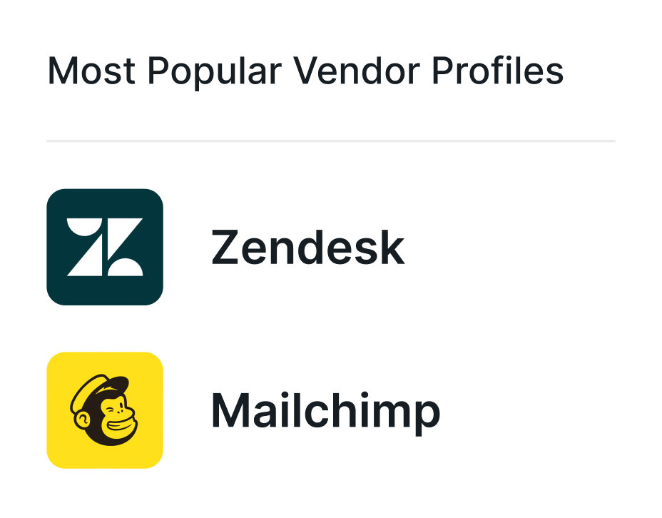
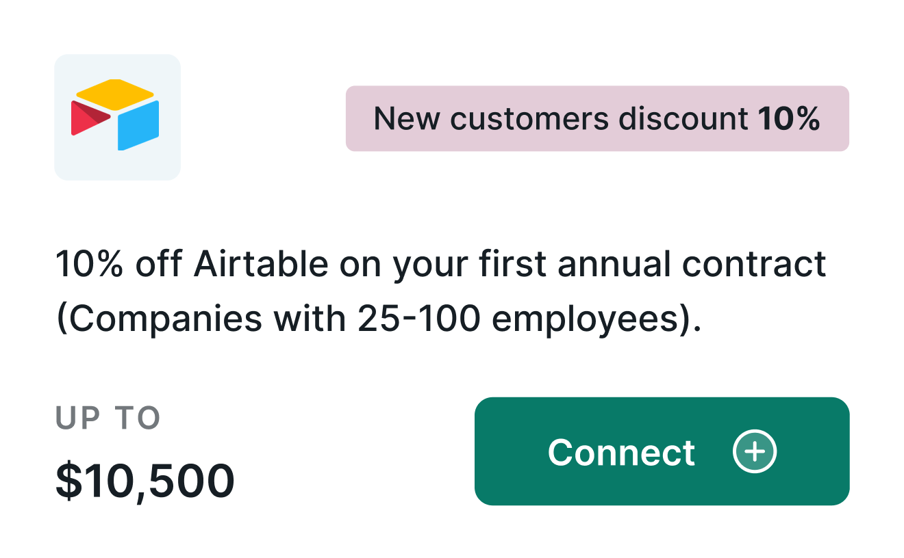

BLOG
Our ideas and insights on Suppliers,
vendors, networks, Platform, and much more.
BLOG
Our ideas and insights on Suppliers, vendors, networks, Platform,and much more.
APR 9, 2024
Becoming a Head of Platform in VC: 7
Essential Skills & Career Moves
Want to land of Platform role in VC? Master these 7 key skills, avoid common pitfalls, and fast-track Your career
APR 26, 2024
What is a VC Platform?
A VC platform offers tools and support to help portfolio companies thrive and grow, driving measurable success.
Latest Blogs
APR 29, 2025
How to Build Resillient, Digital Trade Networks That Strengthen Export, Partnerships
A digital trade platform like Provven offers more than just a directory--it's a connective infrastructure that transforms trade friction into seamless trade flow
APR 15, 2025
The Best Bank loyalty program Strategies to Enchance Customer Retention
A digital trade platform like Provven offers more than just a directory--it's a connective infrastructure that transforms trade friction into seamless trade flow
APR 9, 2025
How Banks Are Utilising Web Platforms To Build Loyalty, Award Discounts and Recommend vendors to their Client Base
A digital trade platform like Provven offers more than just a directory--it's a connective infrastructure that transforms trade friction into seamless trade flow
APR 8, 2025
Is Your Bank Losing SMEs? Here's How to Fix It Through Innovation
A digital trade platform like Provven offers more than just a directory--it's a connective infrastructure that transforms trade friction into seamless trade flow
APR 1, 2025
How Banks Can Optimize Vendor Performance & Strengthen Long-Term Partnerships in Digital Marketplaces
A digital trade platform like Provven offers more than just a directory--it's a connective infrastructure that transforms trade friction into seamless trade flow
APR 27, 2025
Bank-Led Vendor Marketplaces: How to Vet & Onboard Trusted Partners
A digital trade platform like Provven offers more than just a directory--it's a connective infrastructure that transforms trade friction into seamless trade flow
MAR 25, 2025
How To Make Your Banking Marketplace Irresistible To SMEs and Startups (Includes Checklist)
A digital trade platform like Provven offers more than just a directory--it's a connective infrastructure that transforms trade friction into seamless trade flow
MAR 24, 2025
How Digital Marketplaces Help Banks Stand Out in a Crowded Market
A digital trade platform like Provven offers more than just a directory--it's a connective infrastructure that transforms trade friction into seamless trade flow
MAR 15, 2025
5 creative ways VC head of platforms can empower startup founders during an economic deine
A digital trade platform like Provven offers more than just a directory--it's a connective infrastructure that transforms trade friction into seamless trade flow
Help your portfolio companies with strategy.Leave the vendor management to us.
We’ll take on the grunt work of onboarding and verifying vendors and managing benefits and deals. You help your portcos make smarter decisions.
Sounds too good to be true?See Proven in action.

